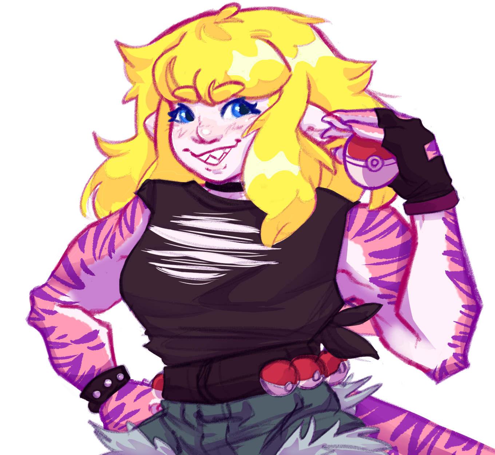
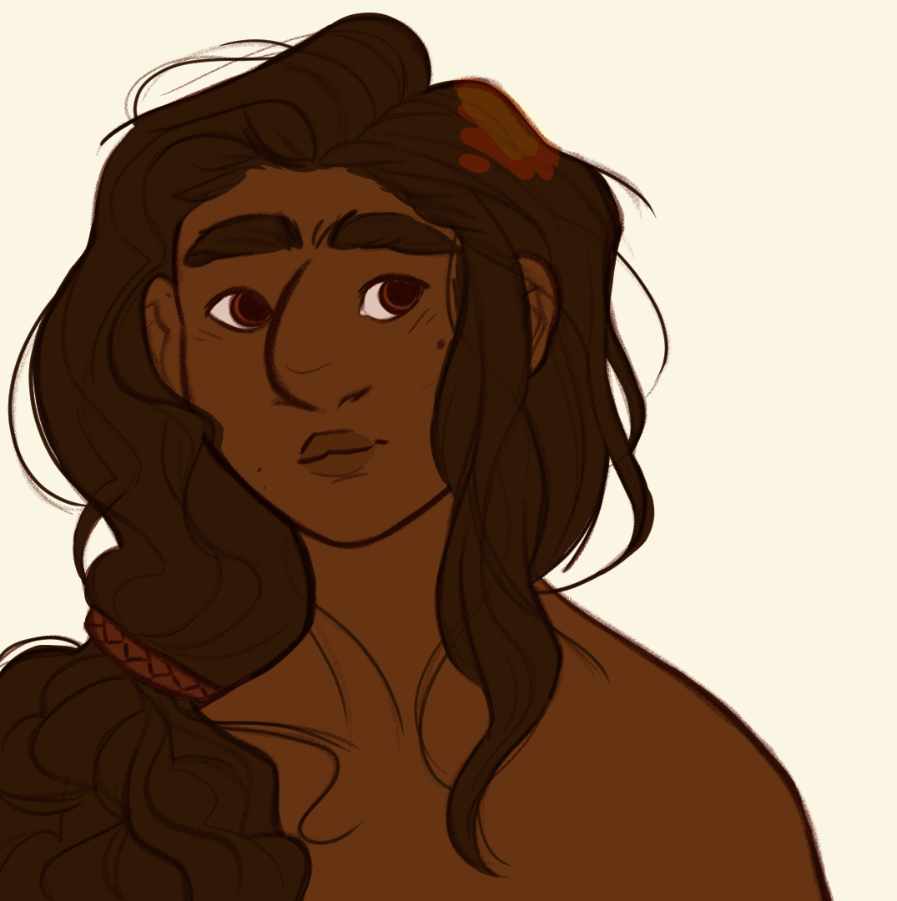
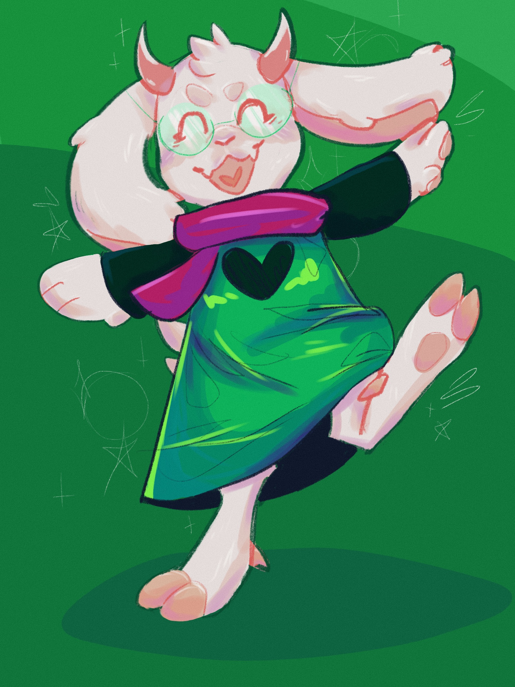
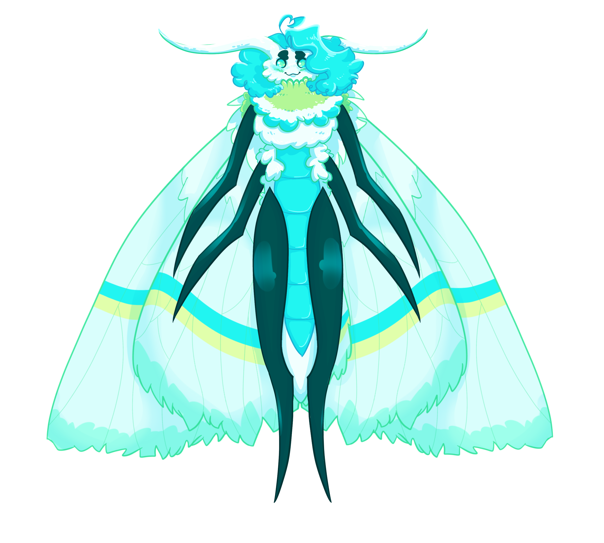
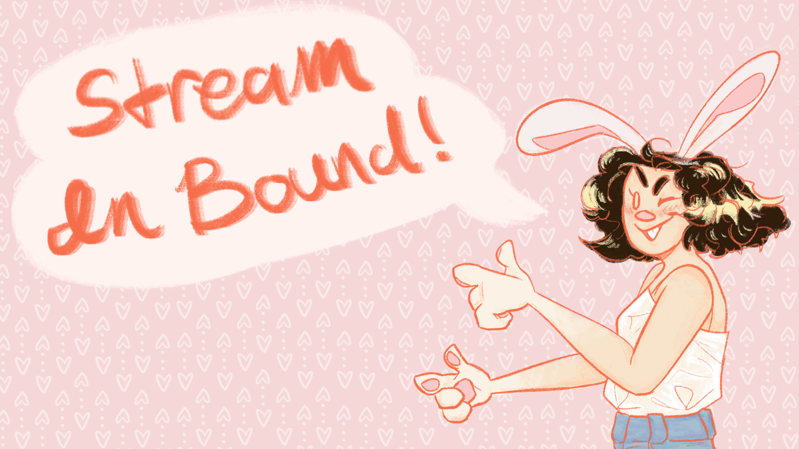
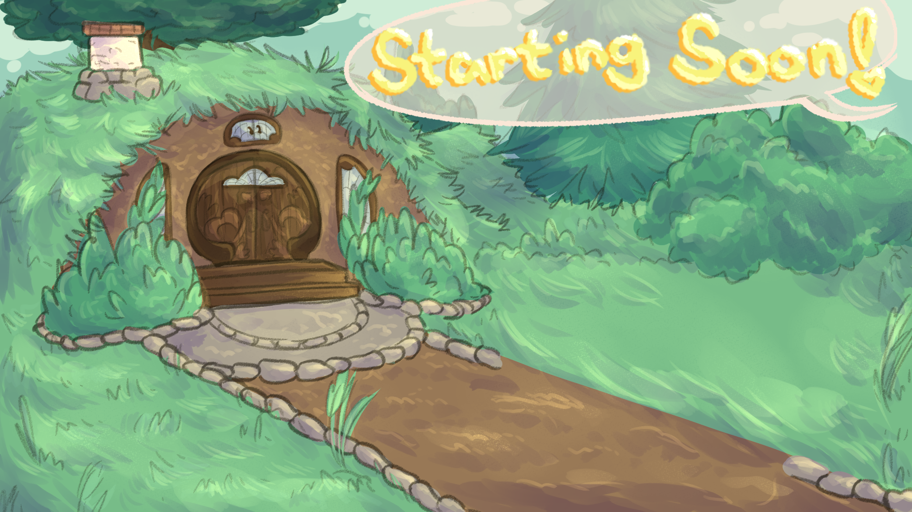

Portfolio
Character Art
I do character art the most.
I've been doodling characters in sketchbooks and notes for as long as I can remember.
I find faces especially satisfying to draw, and hair or fluff the most fun to render.












Design
Most of the following is commissioned work for streamers
including: overlays, backdrops, starting break and end screens, as well as emotes and promo material.
I enjoy vibrant colors the most, but I beleive that every color can look amazing, they just need the right friends.





Illustration
I do detailed illustrations the least often out of any of my specialties.
This is largely due to the immense time and effort they take.
But, I've found that the work they take always pays off in the end.


